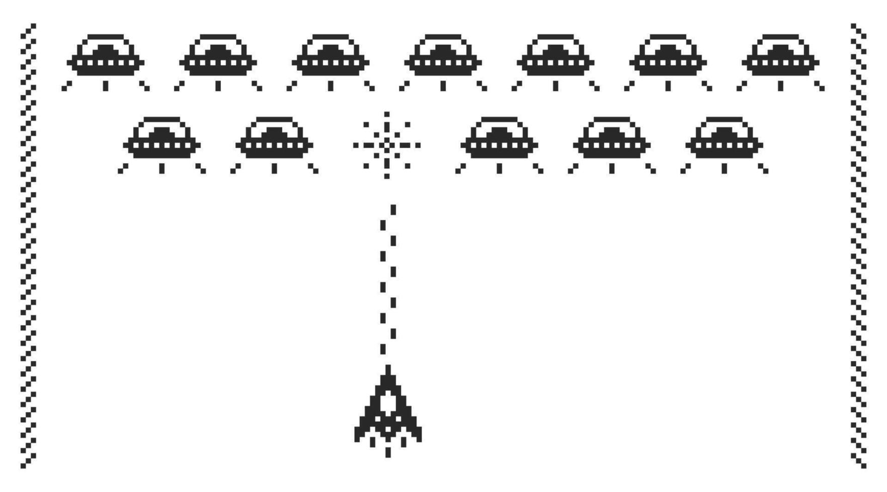

Museo de sonidos 8-bit
A quién no se le cae un lagrimón y se estalla de recuerdos al escuchar estos sonidos tan característicos de los videojuegos de los años 80. En esta sección te invitamos a revivir esos momentos. Hacé clic en cada botón para escuchar y transportarte a la nostalgia de los videojuegos clásicos.
Mini-juego 8-bit
Juego inspirado en la estética de los videojuegos de 8 bits de los años 80, donde podés controlar una nave y eliminar invasores pixelados. Pensado como homenaje a clásicos como Space Invaders y Galaga.
 🎮 JUGAR AHORA